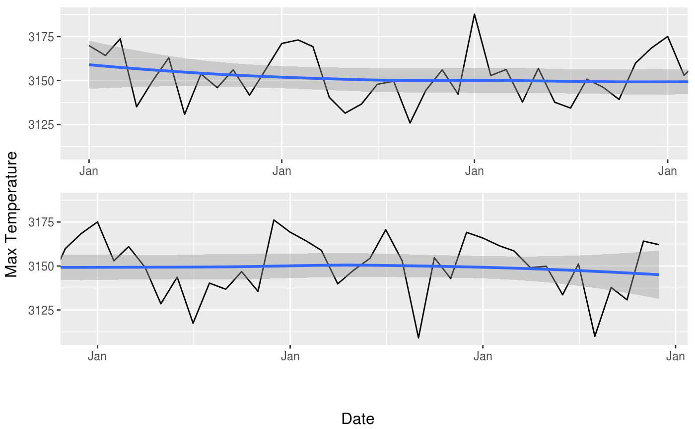

Long timeseries can be compressed to the point of being unreadable when plotted on a page. This function takes a ggplot object of a timeseries and divides it into panels so that the time dimension gets stretched for better readability.
DivideTimeseries(g, x, n = 2, xlab = "x", ylab = "y")
| g | ggplot object |
|---|---|
| x | The vector that was used in g for the x axis (must be of class Date) |
| n | Number of panels |
| xlab | x axis label |
| ylab | y axis label |
Draws a plot.
Other ggplot2 helpers:
MakeBreaks(),
WrapCircular(),
geom_arrow(),
geom_contour2(),
geom_contour_fill(),
geom_label_contour(),
geom_relief(),
geom_streamline(),
guide_colourstrip(),
map_labels,
reverselog_trans(),
scale_divergent,
scale_longitude,
stat_na(),
stat_subset()
library(ggplot2) library(data.table) gdata <- geopotential[lat == -30 & lon == 0] g <- ggplot(gdata, aes(date, gh)) + geom_line() + geom_smooth() + scale_x_date(date_breaks = "1 year", date_labels = "%b") DivideTimeseries(g, gdata$date, n = 2, "Date", "Max Temperature")#> Warning: 'DivideTimeseries' is deprecated, use ggwrap instead (https://github.com/wilkox/ggwrap)#>#> Error in pl$grobs[[leg]] : #> attempt to select less than one element in get1index#> Warning: `guides(<scale> = FALSE)` is deprecated. Please use `guides(<scale> = "none")` instead.#>#> Warning: `guides(<scale> = FALSE)` is deprecated. Please use `guides(<scale> = "none")` instead.#>